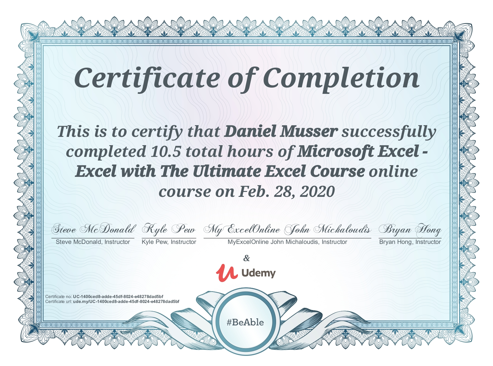

<h1>Certifications Earned</h1>
<h3>Partmaker CAM - November 2013 </h3>

<h3>SolidWorks Advanced Cad - June 2018</h3>

<h3>Ultimate Excel Course - February 2020</h3>

<h3>Learn SQL Using PostgreSQL - August 2020</h3>

<h3>MySQL For Data Analytics and Business Intelligence - February 2026</h3>

